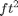
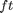
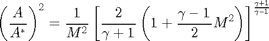

Contents
% Joel Lubinitsky % AEE 343 - HW3.3 % 02/26/15 clear all close all clc
Problem 3, 4:
An ideal gas enters subsonically and flows isentropically through a choked converging-diverging duct having a circular cross section area that varies with axial distance from the throat according to the formula where is in  and is in . Note that the throat is located at . For this flow situation, sketch the side view of the duct and graph the variation of Mach number, pressure ratio , and temperature ratio through the duct from to .
Carry out the same calculation as in problem 3 but for Helium, where
Calculations

nPoints = 1001; xDuct = linspace(-1, 1, nPoints); % ft area = 0.1 + xDuct .^ 2; % ft^2 radius = sqrt(area ./ pi); % ft yUpper = radius; % ft yLower = -radius; % ft % Air gammaAir = 1.4; indexThroat = find(xDuct == 0); areaThroat = area(indexThroat); % ft^2 nMach = linspace(0, 6, nPoints); areaMachAir = areaThroat .* sqrt((1 ./ (nMach .^ 2)) .*... % ft^2 ((2 ./ (gammaAir + 1)) .* (1 + ((gammaAir - 1) ./ 2)... .* nMach .^ 2)) .^ ((gammaAir + 1) ./ (gammaAir - 1))); indexMachThroatAir = find(areaMachAir == min(areaMachAir)); xMach1Air = -sqrt(areaMachAir(1 : indexMachThroatAir) - 0.1); xMach2Air = sqrt(areaMachAir(indexMachThroatAir + 1 : end) - 0.1); xMachAir = [xMach1Air, xMach2Air]; p0_pAir = (1 + ((gammaAir - 1) ./ 2) .* nMach .^ 2)... .^ (gammaAir ./ (gammaAir - 1)); T0_TAir = 1 + ((gammaAir - 1) ./ 2) .* nMach .^ 2; p_p0Air = 1 ./ p0_pAir; T_T0Air = 1 ./ T0_TAir; % Helium gammaHe = 1.66; areaMachHe = areaThroat .* sqrt((1 ./ (nMach .^ 2)) .*... % ft^2 ((2 ./ (gammaHe + 1)) .* (1 + ((gammaHe - 1) ./ 2)... .* nMach .^ 2)) .^ ((gammaHe + 1) ./ (gammaHe - 1))); indexMachThroatHe = find(areaMachHe == min(areaMachHe)); xMach1He = -sqrt(areaMachHe(1 : indexMachThroatHe) - 0.1); xMach2He = sqrt(areaMachHe(indexMachThroatHe + 1 : end) - 0.1); xMachHe = [xMach1He, xMach2He]; p0_pHe = (1 + ((gammaHe - 1) ./ 2) .* nMach .^ 2)... .^ (gammaHe ./ (gammaHe - 1)); T0_THe = 1 + ((gammaHe - 1) ./ 2) .* nMach .^ 2; p_p0He = 1 ./ p0_pHe; T_T0He = 1 ./ T0_THe;
Plots
figure(1) hold on axis equal title('Side view of Duct') xlabel('X [ft]') ylabel('Y [ft]') plot(xDuct, yUpper, 'color', [0 0 0]) plot(xDuct, yLower, 'color', [0 0 0]) figure(2) hold on title('Variation of M, p/p_0, T/T_0 through converging-diverging duct (Air)') xlabel('X [ft]') ylabel('M, p/p_0, T/T_0') axis([-1 1 0 6]) plot(xMachAir, nMach, '-', 'color', [0 0 0]) plot(xMachAir, p_p0Air, '--', 'color', [0 0 0]) plot(xMachAir, T_T0Air, ':', 'color', [0 0 0]) legend('Mach Number, M', 'Pressure Ratio, p/p_0',... 'Temperature Ratio, T/T_0', 'location', 'northwest') figure(3) hold on title('Variation of M, p/p_0, T/T_0 through converging-diverging duct (Helium)') xlabel('X [ft]') ylabel('M, p/p_0, T/T_0') axis([-1 1 0 6]) plot(xMachHe, nMach, '-', 'color', [0 0 0]) plot(xMachHe, p_p0He, '--', 'color', [0 0 0]) plot(xMachHe, T_T0He, ':', 'color', [0 0 0]) legend('Mach Number, M', 'Pressure Ratio, p/p_0',... 'Temperature Ratio, T/T_0', 'location', 'northwest')